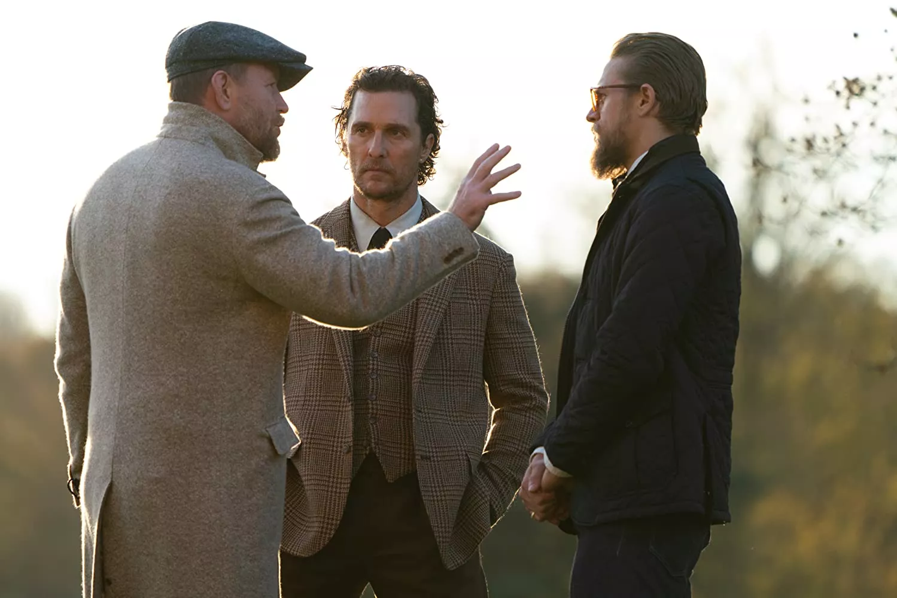

Сюжет
Мікі Пірсон, емігрант зі Сполучених Штатів, який закінчив Оксфордський університет, вирішив направити свій блискучий розум на створення неймовірно прибуткової бізнес-імперії. Виробництво марихуани завжди була затребуване, так чому ж не відкрити кілька філій у Лондоні, самому серці Сполученого Королівства.
Схема вийшла ну дуже вдалою, пора б і продати її якимось грошовим мішкам із Оклахоми. Ось тут-то Пірсона й наздогнав справжній кримінальний світ Англії з його чарівними джентльменами, кожен із яких хотів би встати на шляху в Мікі.
Звичайно ж, будуть і перестрілки, і кілька випадкових вбивств, і нестандартні схеми — ці джентльмени вміють вести справи витончено.
